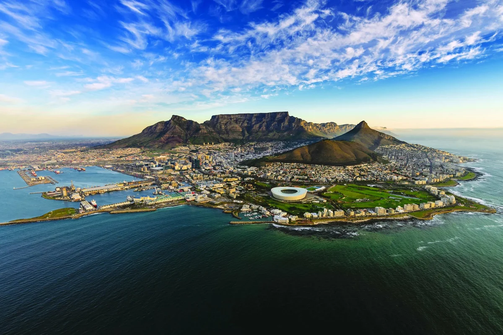
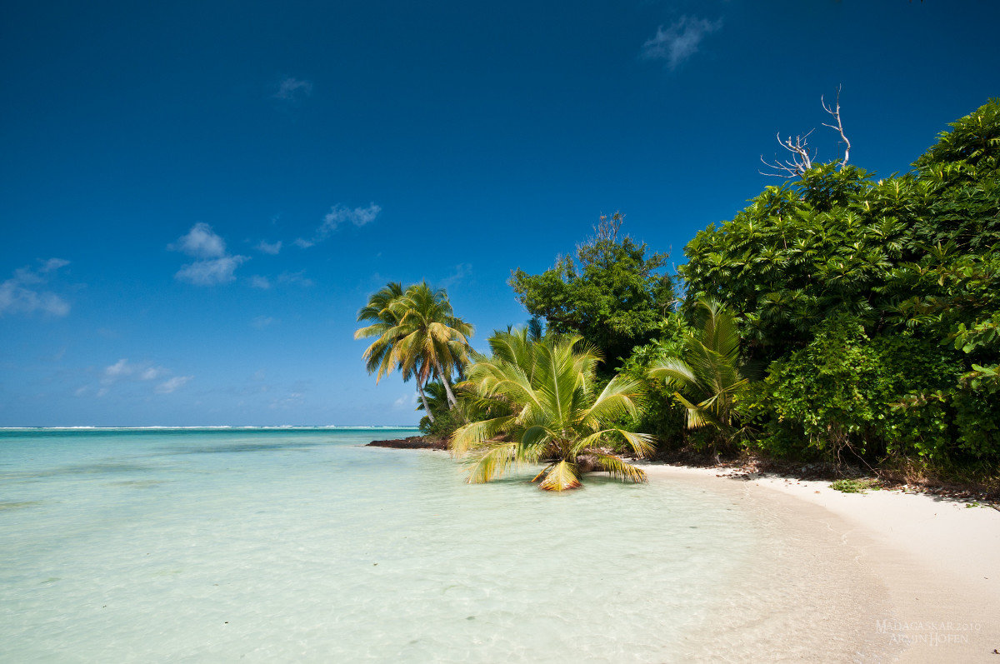
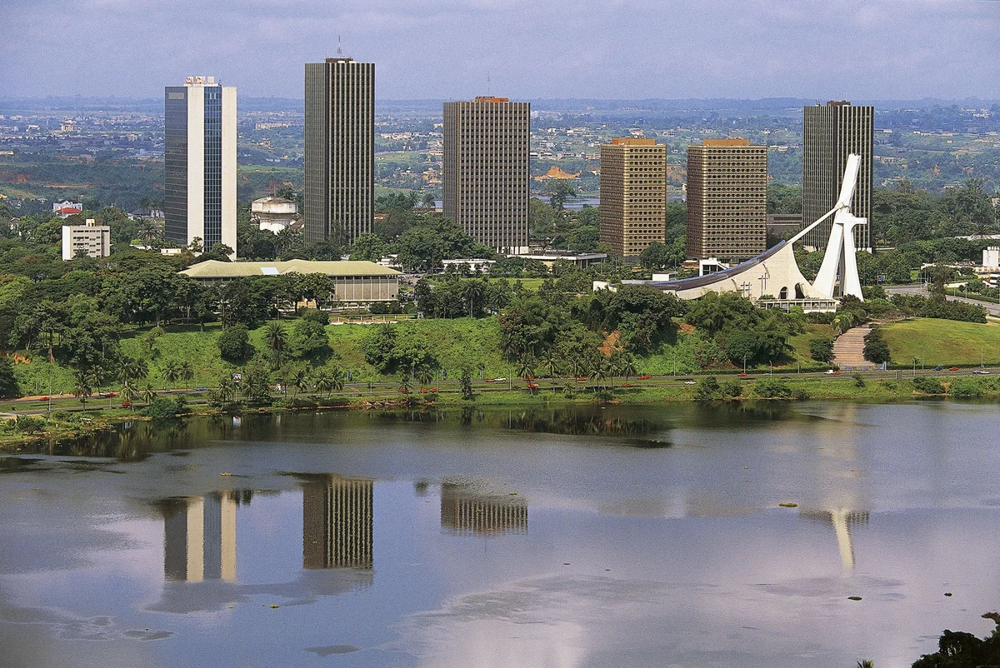
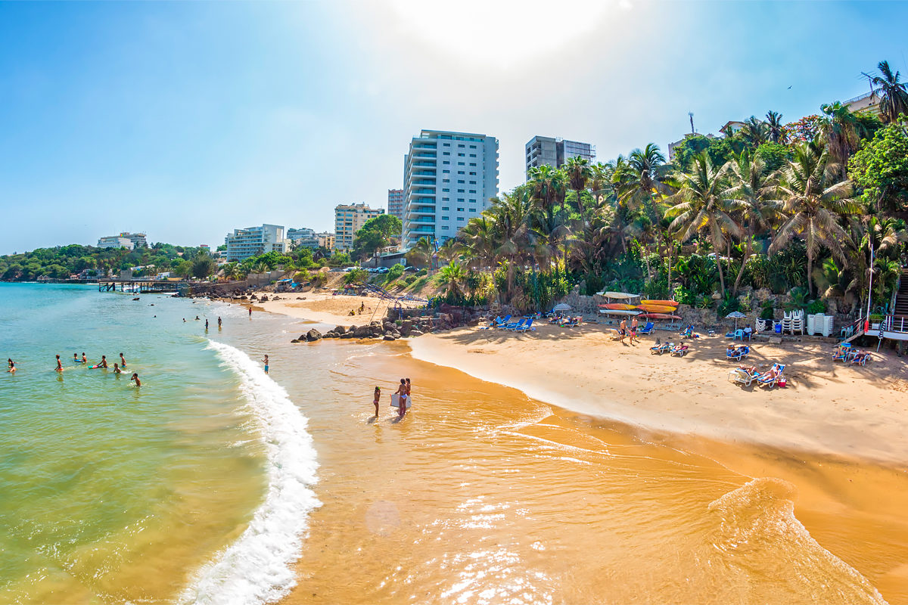

ЮАР
Мадагаскар
Кот-д’Ивуар
Сенегал
Кейптаун
Ю́жно-Африка́нская Респу́блика (сокращённо — ЮА́Р) — государство на юге Африки. На севере граничит с Намибией, Ботсваной и Зимбабве, на северо-востоке — с Мозамбиком и Эсватини. Внутри территории ЮАР находится государство-анклав Лесото.ЮАР является одной из самых национально разнообразных стран Африки и имеет наибольшую долю белого, азиатского и смешанного населения на континенте. Страна обладает богатыми минеральными ресурсами, а также является самой экономически развитой в Африке и имеет относительно прочные мировые позиции. Единственная африканская страна в G20.
Узнать подробнее

Антананариву
После распада суперконтинента Гондвана, около 88 миллионов лет назад, Мадагаскар отделился от Индии, что обусловило развитие местных растений и животных в относительной изоляции. Более 90 % видов не встречаются больше нигде на Земле. Разнообразные экосистемы острова и уникальный животный мир находятся под угрозой вымирания из-за быстро растущего населения. Принято считать, что первые человеческие поселения на Мадагаскаре возникли между 350 годом до н. э. и 550 годом н. э., однако археологические данные позволяют предположить, что первое появление человека на острове могло иметь место до 10 тысяч лет назад.
Узнать подробнее

Ямусукро
Респу́блика Кот-д’Ивуа́р — государство в Западной Африке. Граничит с Либерией, Гвинеей, Мали, Буркина-Фасо и Ганой, с юга омывается водами Гвинейского залива Атлантического океана. До 1960 года — колония Франции. В стране насчитывается более 60 этнических групп. Столица — Ямусукро (с населением 242 тыс. жителей), главный экономический и культурный центр страны — Абиджан (около 3 млн чел.). Официальный язык — французский, основные местные языки — дьюла, бауле, бете. Национальный праздник — День провозглашения независимости (7 августа 1960 года).
Узнать подробнее

Дакар
Период империй в развитии Сенегала примечателен тем, что именно тогда, около 500 года, на его территории впервые появилось и образовались две этнические группы: волоф и серер. В IX веке в долине реки Сенегал поселилась ещё одна этническая группа — тукулёр и с XI по XIV века в восточном Сенегале стало доминировать могущественное государство народности тукулёр — Текрур. К XV столетию сформировались государства и других народов — государство Волоф и государство Серер.
Узнать подробнее
